Local feeder (Hemiptera) in stems of Salix
| Record no.: | 0484 |
|---|---|
| Feeding guild: | Local feeder in stem |
| Taxonomy: | Hemiptera: cf. Psylloidea |
| Stages observed: | trace, nymph |
| Distribution observed: | IA |
| Hosts in Salix: | undetermined S. sp. (willow) |
I found this hemipteran, tentatively identified as a psyllid, dwelling in two separate chambers inside the flowering stem of a current-year willow shoot in early July, 2023. As far as I could tell, the chambers were completely sealed off from the outside world with no clear entry or exit. I noted a possible association with cecidomyiid larvae that occurred inside some of the same shoots accompanied by slight swelling of the stem tissue, leading me to wonder if the hemipteran might at least sometimes be an inquiline inside the cecidomyiid galls, but this was by no means clear. Perhaps supporting this hypothesis, inside one of the internal stem chambers occupied by the hemipteran, an elongate, shriveled black object was present that reminded me of the larval remains and/or associated fungal deposits of cecidomyiid larvae I observed in other hosts during the survey (see images).
Along with the hemipteran individuals in the chambers, several ovoid, yellowish-orange objects could be seen, apparently eggs.
My journal notes for this observation read as follows:
I collected this flower shoot of willow, Salix sp., because of the slight swelling at the base of the rachis of the infructescence, some of which I have previously dissected in recent weeks and found cecid[omyiid] larvae inside and sometimes excavation. This time I didn’t find anything in that swelling, but just below it, in a normal looking stem about 2mm in diameter, there were two adjacent patches (separated by a few mm of unaffected tissue) of irregular hollows in the stem, each inhabited by [at least] one of these tiny hemipterans and what appeared to be eggs. Each hollow patch was roughy 8-10 mm in length... (July 6, 2023)
A cursory search of the literature revealed that at least two psyllid genera including numerous species have been recorded from willows (Jensen 1951, Halbert and Burckhardt 2020), but it was not immediately clear if any internal feeders are known among them. The authors of the latter reference review the available information, writing: "Salix...was at least twice successfully colonized by psyllids, viz. by species of Cacopsylla and of Bactericera...the identification of species [in these genera on Salix] is difficult...The Nearctic Cacopsylla species associated with Salix spp. have been studied in detail (e.g. Jensen 1951; Hodkinson 1978) but not those of Bactericera." (p. 60)
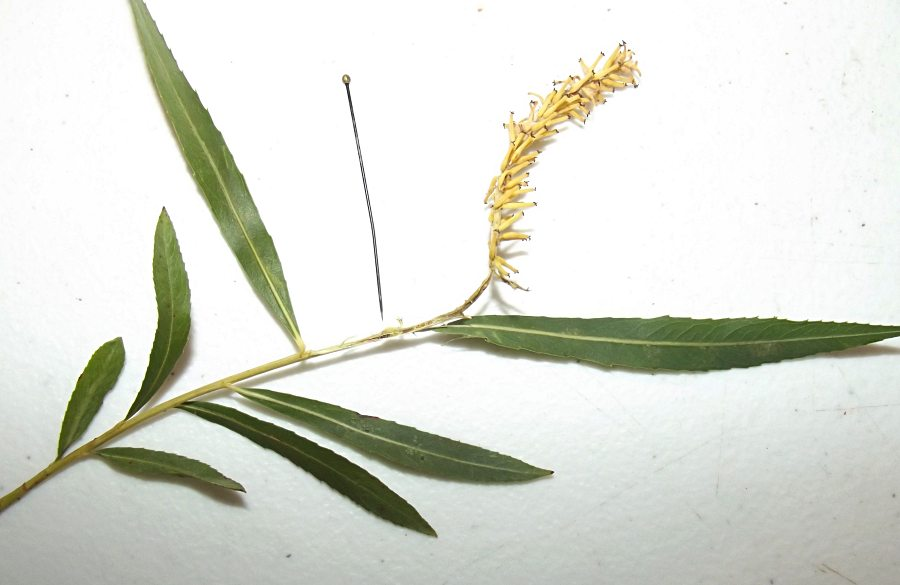
 Prev
Prev


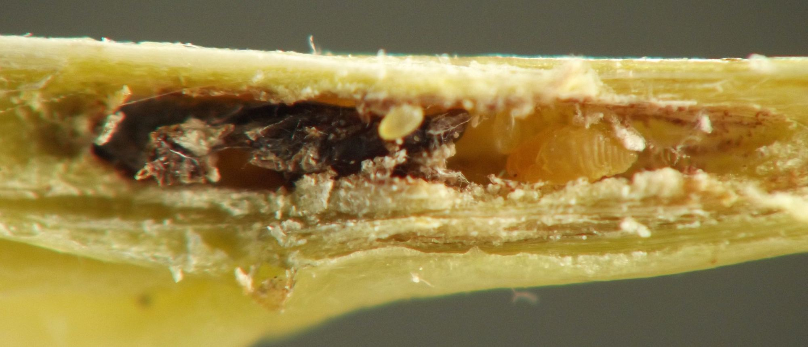

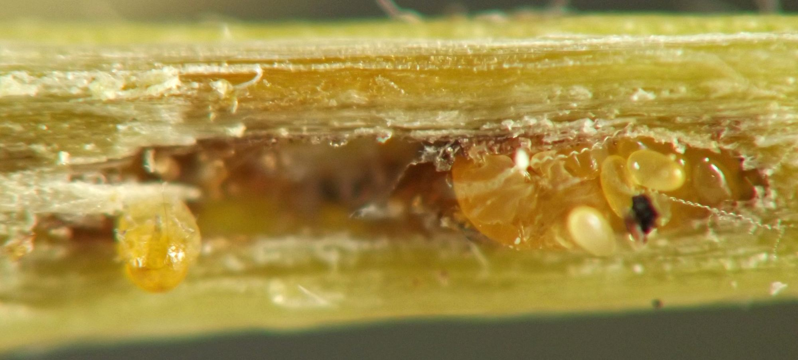

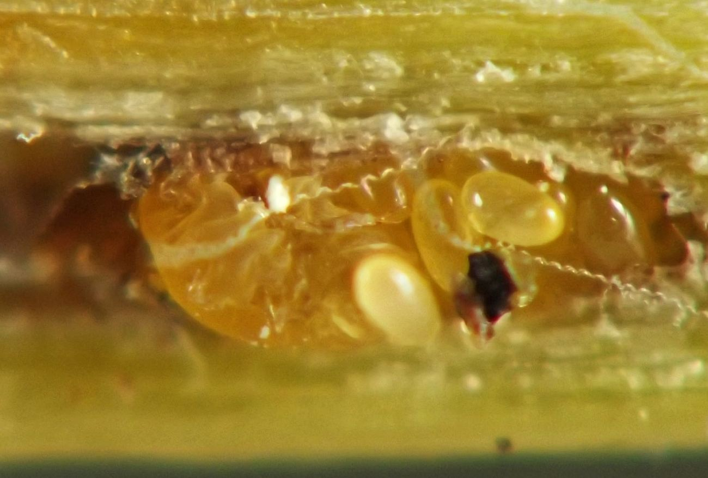

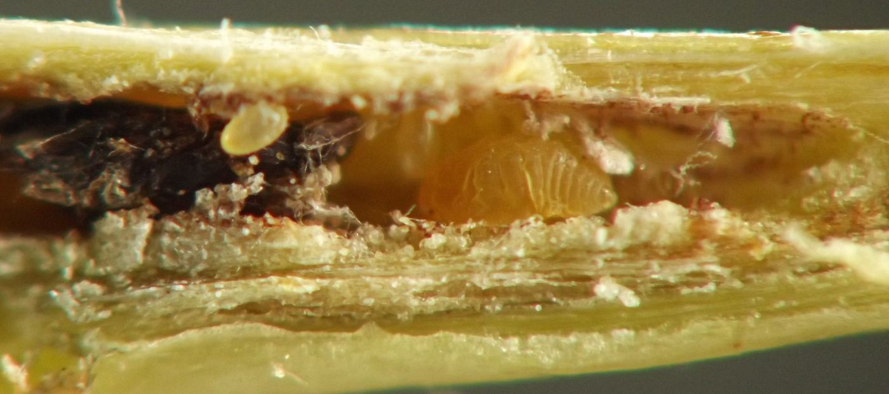

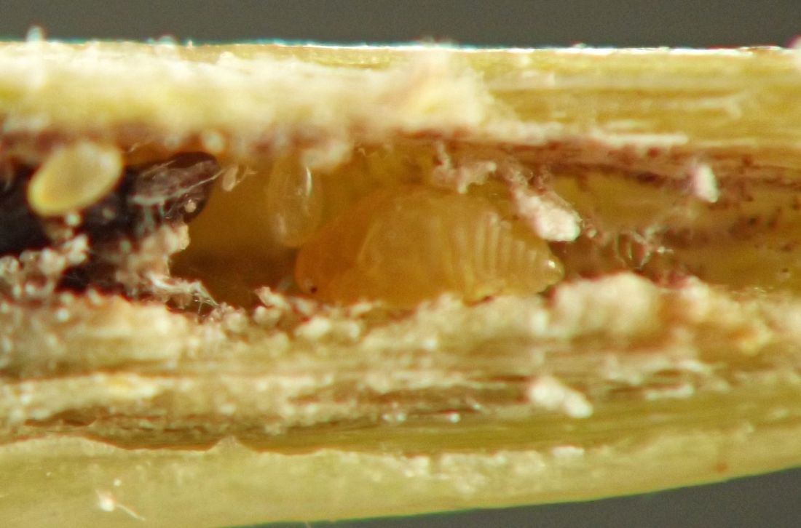

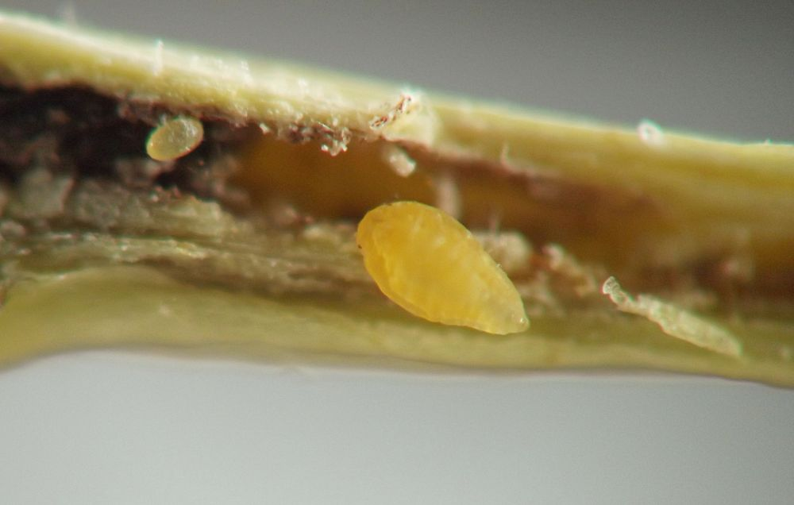

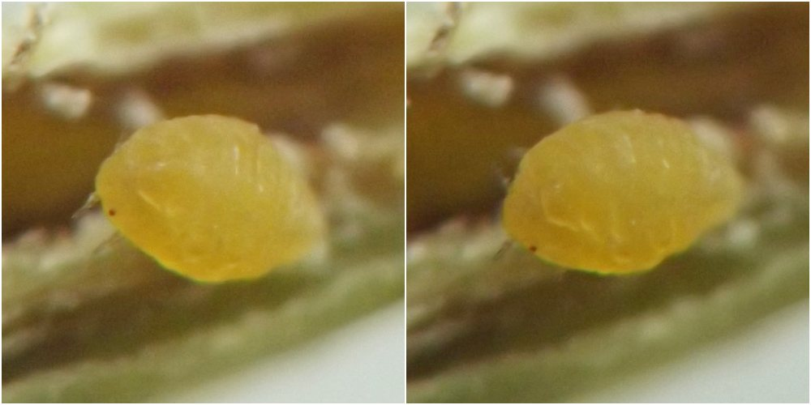

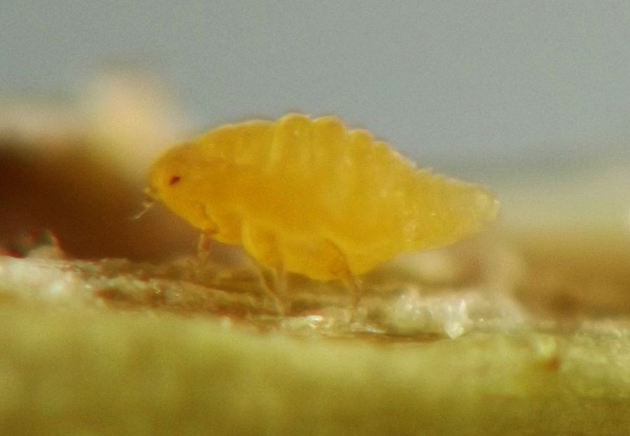

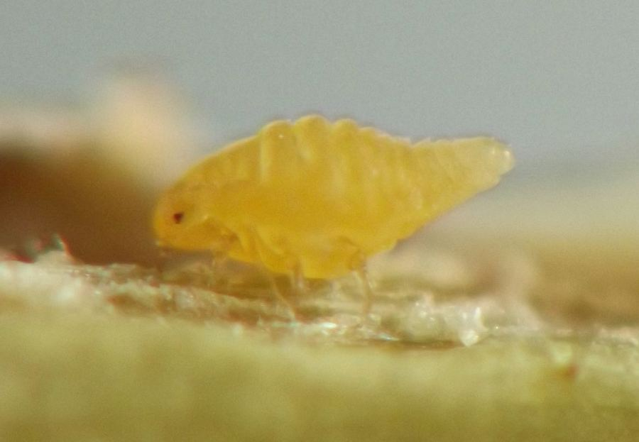

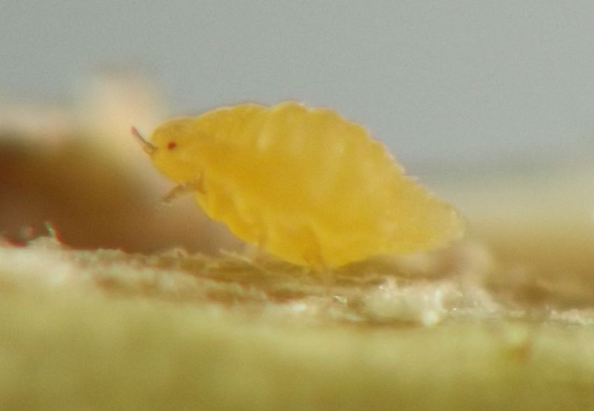

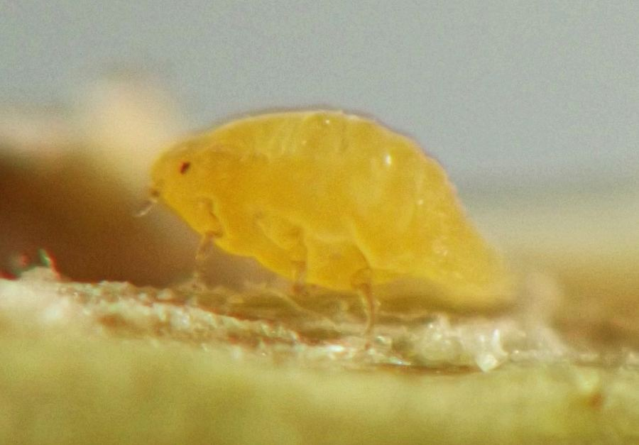

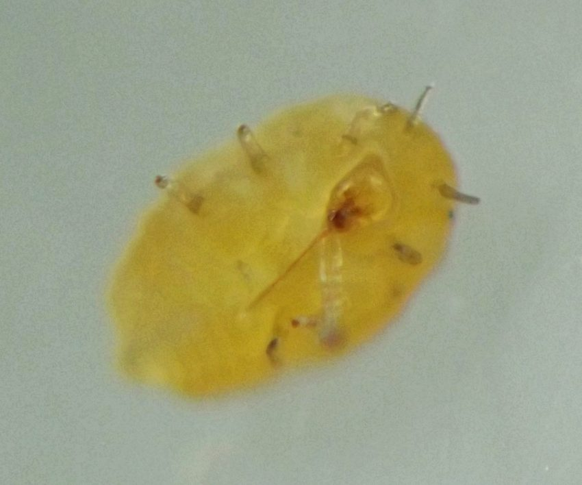


- Halbert, S.E. and D. Burckhardt. 2020. The psyllids (Hemiptera: Psylloidea) of Florida: newly established and rarely collected taxa and checklist. Insecta Mundi 0788: 1-88.[return to in-text citation]
- Jensen, D.D. 1951. The North American species of Psylla from willow, with descriptions of new species and notes on biology (Homoptera: Psyllidae). Hilgardia 20(16): 299-324.[return to in-text citation]
Page created: November 25, 2026. Last update: November 25, 2026